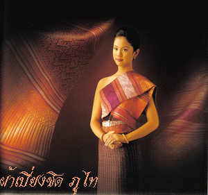

วิถีชีวิต : ชุมชนคนภูไท

ประเพณีและวัฒนธรรม
วัฒนธรรมการแต่งกาย
โดยลักษณะทางสังคม ชาวภูไท(ผู้ไทย) เป็นกลุ่มที่มีความขยัน และอดออมเป็นพิเศษ
และมีวัฒนธรรมในเรื่องการถักทอเสื้อผ้าเด่นชัด จึงปรากฎเสื้อผ้าชนิดต่างๆ ทั้งฝ้าฝ้าย
ผ้าไหมในกลุ่มชาวภูไท(ผู้ไทย) โดยเฉพาะผ้าแพรวานับว่ามีวัฒนธรรมเรื่องเสื้อผ้าเด่นชัดมาก
ผ้าซิ่น วัฒนธรรมของกลุ่มภูไทที่เด่นชัด คือ การทอผ้าซิ่นหมี่ตีนต่อเป็นผืนเดียวกับผ้าผืน เช่น ตีนต่อขนาดเล็ก
กว้าง 4 ถึง 5 นิ้ว (มือ) ที่เรียกว่า ตีนเต๊าะ เป็นที่นิยมในหมู่ภูไท ทอเป็นหมี่สาด มีหม้อย้อมคราม
จนเป็นสีครามเกือบเป็นสีดำ แต่ชาวบ้านเรียกว่า?ผ้าดำ? หรือซิ่นดำ ลักษณะเด่นของซิ่นหมี่ชาวภูไท คือการทอและลวดลาย
เช่น ทอเป็นลายขนาดเล็กๆ นอกจากนี้มีลายอื่น ๆ เช่น หมี่ปลา หมี่ตุ้ม หมี่กระจัง หมี่ข้อ ทำเป็นหมี่คั่น
มิได้ทอเป็นหมี่ทั้งผืน แต่หากมีลายต่าง ๆ มาคั่นไว้ สีที่นิยมคือ สีเขียว สีน้ำเงิน สีแดง สีม่วง
พื้นมักใช้เครือหูกฝ้ายสีเปลือกอ้อย นอกจากนี้ยังพบผ้ามัดหมี่ฝ้ายขาวสลับดำในกลุ่มผู้ไทย
เสื้อ นิยมทำเป็นเสื้อแขนกระบอกสามส่วนติดกระดุมธรรมดา กระดุมเงิน หรือเหรียญสตางค์ เช่น เหรียญสตางค์ห้า
สตางค์สิบ มาติดเรียงเป็นแถว นิยมใช้เป็นผ้าย้อม ครามเข้มใน ราว พ.ศ. 2480 โดยมีผู้นำผ้าขลิบแดงติดชายเสื้อ เช่น
ที่คอสาบเสื้อปลายแขนเพื่อใช้ในการฟ้อนภูไทสกลนคร และใช้กันมาจนถึงปัจจุบัน
ผ้าห่ม การทอผ้าผืนเล็ก ๆ เป็นวัฒนธรรมของชาวกลุ่มพื้นอีสานมานานแล้วผ้าห่มใช้สำหรับห่มแทนเสื้อกันหนาว
ใช้คลุมไหล่ เช่นเดียวกับไทยลาวที่นิยมใช้ผ้าขาวม้าพาดไหล่ ผ้าห่มของกลุ่มชนต่าง ๆ ในเวลาต่อมามีขนาดเล็ก
ทำเป็นผ้าสไบเป็นส่วนแทนประโยชน์ใช้สอย เดิมคือห่มกันหนาว หรือปกปิดร่างกายส่วนบน โดยการห่มทับเสื้อ
ผ้าห่มของภูไทที่เรียกว่า ผ้าจ่อง เป็นผ้าทอด้ายยืน มีเครื่องลาย
เครื่องพื้นหลายแบบนอกจากนี้ยังมีผ้าแพรวานอกจากผ้าจ่องแล้ว ชาวภูไทยังมีผ้าลาย ซึ่งใช้เป็นผ้ากั้นห้อง
หรือใช้ห่มแทนเสื้อกันหนาวหรือต่อกลาง 2 ผืน เป็นผ้าห่มขนาดใหญ่พอสมควร แต่ผ้าลายที่มีชื่อคือผ้าลายบ้านนางอย
อำเภอเต่างอย จังหวัดสกลนคร การแต่งกายของชาวภูไท ยังนิยมสายสร้อยคอ สร้อยข้อมือ ข้อเท้า (ก้องแขน ก้องขา)
ทำด้วยโลหะเงิน เกล้าผมเป็นมวยสูงตั้งตรงในสมัยโบราณใช้ผ้ามนหรือแพรมน ทำเป็นผ้าสี่เหลี่ยมเล็ก ๆ
ม้วนผูกมวยผมอวดลายผ้าด้านหลังใน ปัจจุบันใช้ผ้าแถบเล็ก ๆ สีแดงผูกแทนแพรมนทำเป็นผ้าสี่เหลี่ยมเล็ก ๆ
ม้วนผูกมวยผมอวดลายผ้าด้านหลังใน ปัจจุบันใช้ผ้าแถบเล็ก ๆ สีแดงผูกแทนแพรมน
ฟ้อนภูไท 3 เผ่า
การฟ้อนภูไท 3 เผ่า เป็นการนำเอามรดกทางวัฒนธรรมของชาวภูไทที่อาศัยอยู่ในบริเวณเทือกเขาภูพานซึ่งได้ยกมา
3จังหวัดคือ กาฬสินธุ์ สกลนคร และนครพนม มาเปรียบเทียบในเชิงการจัดการแสดงทางด้านนาฏกรรม
อันเนื่องมาจากชาวภูไททั้งสามกลุ่มนี้มีรูปแบบและ เอกลักษณ์ของตนเองที่แตกต่างกัน ในปี พ.ศ. 2522
กรมศิลปากรมีนโยบายที่จะเผยแพร่ศิลปวัฒนธรรมอีสาน จึงได้จัดส่งคณาจารย์พร้อมนักเรียนจากวิทยาลัยนาฏศิลปร้อยเอ็ด
ลงพื้นที่ภาคสนามในจังหวัดกาฬสินธุ์ สกลนคร และนครพนม(ต่อมามีพื้นที่แยกตัวเป็นจังหวัดออกจากนครพนมคือ มุกดาหาร)
โดยรวบรวมเอาท่าฟ้อน กลอนลำ ดนตรีและการแต่งกาย จนเป็นผลงาน “ฟ้อนภูไท 3 เผ่า” ขึ้นมาครั้งแรก ฟ้อนภูไท 3 เผ่า
จะเริ่มจากการฟ้อนของชาวภูไทจังหวัดกาฬสินธุ์ ภูไทจังหวัดสกลนคร และภูไทจังหวัดนครพนม ในการฟ้อนภูไททั้ง 3 เผ่านี้
จะมีผู้ชายเข้ามาฟ้อนประกอบทั้งสามเผ่า มีการแสดงการฟ้อนมวยโบราณต่อสู้แสดงเชิงมวยกันระหว่างเผ่า
และตลอดจนการฟ้อนเกี้ยวพาราสีของชายหญิงอีกด้วยหลังจากนั้นไม่นานวิทยาลัยนาฏศิลปกาฬสินธุ์ ก็ได้ประดิษฐ์ ฟ้อนภูไท
3 เผ่า ในอีกรูปแบบหนึ่ง ซึ่งจะมีลักษณะที่แตกต่างกัน คือ จะเริ่มการฟ้อนด้วยเผ่าสกลนครก่อน
ตามมาด้วยภูไทจังหวัดกาฬสินธุ์ และภูไทจังหวัดนครพนม ซึ่งจะฟ้อนเฉพาะผู้หญิงล้วนสำหรับ “ฟ้อนภูไท 3 เผ่า” ของ
ชมรมนาฏศิลป์และดนตรีพื้นเมือง (วงแคน) จะใช้วิธีการนำเสนอคล้ายกับฟ้อนภูไท 3 เผ่า ของวิทยาลัยนาฏศิลปร้อยเอ็ด
เพียงแต่มีท่าฟ้อนที่แตกต่างกันเล็กน้อย
พระธาตุเชิงชุมเป็นปูชนียสถานที่สำคัญของจังหวัดสกลนคร ซึ่งในสมัยโบราณนั้นต้องมีคนคอยเฝ้าดูแล
รักษาทำความสะอาดอยู่ตลอดทั้งปี
ซึ่งพวกที่ดูแลทำนุบำรุงพระธาตุเชิงชุมนี้จะได้รับการยกเว้นไม่ต้องเสียภาษีรัษฏชูปการ ซึ่งมีหลายชนเผ่าด้วยกัน
ซึ่งในกลุ่มผู้ดูแลนั้นมีชาวผู้ไทรวมอยู่ด้วย ในตอนนั้นมักจะมีงานบุญทอดผ้าป่าและฉลององค์พระธาตุเชิงชุม
ชาวบ้านจะนำข้าวเม่า ปลาย่าง มาติดกัณฑ์เทศน์ ชาวผู้ไทซึ่งเป็นกลุ่มที่อาสาเป็นผู้ปฏิบัติรักษาองค์พระธาตุ
โดยเฉพาะผู้ชายจะแต่งตัวนุ่งกางเกงขาก๊วย และนุ่งโสร่งทับ สวมเสื้อดำ จะฟ้อนด้วยลีลาอันอ่อนช้อยสวยงาม
โดยร้องและฟ้อนกันเป็นหมู่ๆ แล้วจึงถวายผ้าป่า
ต่อมาได้มีการดัดแปลงท่าฟ้อนให้สวยงามยิ่งขึ้นเปลี่ยนจากผู้แสดงชายมาเป็นหญิงล้วน
ชาวผู้ไทเป็นชนกลุ่มน้อยกลุ่มหนึ่ง ที่อาศัยอยู่ในภาคตะวันออกเฉียงเหนือของประเทศไทย
แต่เดิมนั้นชาวผู้ไทตั้งบ้านเรือนอยู่แถบสิบสองจุไทย คือ บริเวณลาวตอนเหนือ บางส่วนของเวียตนามเหนือ
และทางตอนใต้ของจีน มีศูนย์กลางอยู่ที่เมืองไล เมืองแถง เรียกว่า ผู้ไทดำ ชาวผุ้ไทสามารถแบ่งออกเป็น 2 กลุ่มใหญ่ๆ
ถึงแม้จะมีผู้แบ่งเป็นกลุ่มผู้ไทแดงและผู้ไทลาย แต่ก็ไม่มีประวัติชัดเจน (ทวีศิลป์ สืบวัฒนะ. 2526 : 2)
ชาวผู้ไทยที่อพยพเข้ามาอยู่ในประเทศไทยนั้นส่วนใหญ่มาจากเมืองวัง และเมืองตะโปน
ซึ่งอยู่ทางทิศตะวันออกของเมืองสวันเขต ประเทศสาธารณรัฐประชาธิปไตยประชาชนลาวในปัจจุบัน
และแยกย้ายกันตั้งหลักแหล่งอยู่บริเวณเทือกเขาภูพานในเขต 3 จังหวัด คือ
ชาวผู้ไทจังหวัดกาฬสินธุ์ อาศัยอยู่ในเขตอำเภอเขาวง อำเภอกุฉินารายณ์ อำเภอสหัสขันธุ์ อำเภอคำม่วง
ชาวผู้ไทจังหวัดสกลนคร อยู่ในอำเภอพรรณานิคม อำเภอวาริชภูมิ
ชาวผู้ไทจังหวัดนครพนม อยู่ในอำเภอเรณูนคร อำเภอคำชะอี อำเภอหนองสูง
ต่อมาชาวผู้ไทในท้องถิ่นอื่นได้มาเห็นจึงได้นำไปประยุกต์ท่าฟ้อนให้สวยงาม และมีการแต่งเนื้อร้องประกอบการฟ้อนขึ้น
การฟ้อนผู้ไท 3 เผ่า ประกอบด้วย
1. ฟ้อนผู้ไทจังหวัดนครพนม เป็นฟ้อนที่ที่มีชื่อเสียงและเป็นที่รู้จักกันดีคือ การฟ้อนผู้ไทของอำเภอเรณูนคร
จนถือว่าเป็นเอกลักษณ์ของจังหวัดนครพนม ในปี พ.ศ. 2498
พระบาทสมเด็จพระเจ้าอยู่หัวและสมเด็จพระนางเจ้าพระบรมราชินีนาถ ได้เสด็จมานมัสการพระธาตุพนม นายสง่า จันทรสาขา
ผู้ว่าราชการจังหวัดนครพนมในสมัยนั้นได้จัดให้มีการฟ้อนผู้ไทถวาย โดยมีนายคำนึง อินทร์ติยะ
ศึกษาธิการอำเภอเรณูนครได้ปรับปรุงท่าฟ้อนผู้ไทให้สวยงามกว่าเดิม
โดยเชิญผู้สูงอายุที่มีประสบการณ์ในการฟ้อนผู้ไทมาให้คำแนะนำ จนกลายเป็นท่าฟ้อนแบบแผนของชาวเรณูนคร
ได้ถ่ายทอดให้แก่ลูกหลานสืบทอดต่อมา ท่าฟ้อนผู้ไทได้แก่ ท่าเตรียม ท่านกกระบาบิน ท่าลำเพลิน ท่ากาเต้นก้อน
ท่ารำม้วน ท่าฉาย ท่ารำส่าย ท่ารำบูชา ท่าก้อนข้าวเย็น ท่าเสือออกเหล่า ท่าจระเข้ฟาดหาง ซึ่งการฟ้อนจัดเป็นคู่ๆ
ใช้ชายจริงหญิงแท้ตั้งแต่ 10 คู่ขึ้นไป เครื่องดนตรีประกอบด้วย กลองกิ่ง กลองแตะ กลองยาว ฆ้องโหม่ง พังฮาด
และกั๊บแก๊บ
สำหรับเครื่องแต่งกาย ฝ่ายหญิงนิยมใช้เสื้อสีน้ำเงินเข้มขลิบสีแดงทั้งเสื้อและผ้าถุง ผ้าสไบสีขาว
เครื่องประดับใช้เครื่องเงินตั้งแต่ตุ้มหู สร้อยคอกำไลเงิน ผมเกล้ามวยสูงทัดดอกไม้สีขาว ห่มผ้าเบี่ยงสีขาว
ซึ่งปัจจุบันใช้ผ้าถักสีขาว ส่วนผู้ชายจะใส่เสื้อม่อฮ่อมขลิบผ้าแดงนุ่งกางเกงขาก๊วยมีผ้าคาดเอวและโพกศีรษะ
2. ฟ้อนผู้ไทจังหวัดสกลนคร เป็นฟ้อนผู้ไทที่มีลีลาแตกต่างจากฟ้อนผู้ไทในท้องถิ่นอื่น
เนื่องจากฟ้อนผู้ไทจังหวัดสกลนครจะสวมเล็บ คล้ายฟ้อนเล็บทางภาคเหนือ ปลายเล็บจะมีพู่ไหมพรมสีแดง
ใช้ผู้หญิงฟ้อนล้วนๆ ท่าฟ้อนที่ชาวผู้ไทสกลนครประดิษฐ์ขึ้นนั้นมีเนื้อเพลงสลับกับทำนอง
การฟ้อนจึงใช้ตีบทตามคำร้องและฟ้อนรับช่วงทำนองเพลง ท่าฟ้อนมีดังนี้ ท่าดอกบัวตูม ท่าดอกบัวบาน ท่าแซงแซวลงหาด
ท่าบังแสง ท่านางไอ่เลาะดอน หรือนางไอ่เลียบหาด ท่านาคีม้วนหาง ดนตรีใช้กลองกิ่ง แคน กลองตุ้ม กลองแตะ กลองยาว
ฆ้องโหม่ง พังฮาด ไม้กั๊บแก๊บ
เครื่องแต่งกาย จะใส่เสื้อสีดำ ผ้าถุงดำขลิบแดง สวมเล็บทำด้วยโลหะหรือบางแห่งใช้กระดาษทำเป็นเส้นมีพู่ตรงปลายสีแดง
ห่มผ้าเบี่ยงสีแดง ผมเกล้ามวยทัดดอกไม้สีขาว บางครั้งผูกด้วยผ้าสีแดงแทน ในปัจจุบันพบว่า
เสื้อผ้าชุดฟ้อนผู้ไทจังหวัดสกลนครได้เปลี่ยนไปบ้าง คือ ใช้เสื้อสีแดงขลิบสีดำ ผ้าถุงสีดำมีเชิง
ผ้าเบี่ยงอาจใช้เชิงผ้าตีนซิ่นมาห่มแทน
3. ฟ้อนผู้ไทจังหวัดกาฬสินธุ์ มีลักษณะการแต่งกายแตกต่างจากฟ้อนผู้ไทในถิ่นอื่น จะสวมเสื้อสีดำขลิบด้วยผ้าขิด
ห่มผ้าแพรวา นุ่งผ้าถุงมัดหมี่มีเชิง ลีลาการฟ้อนได้รับการผสมผสานจากท่าฟ้อนผู้ไท และเซิ้งบั้งไฟ
ท่าฟ้อนจะเริ่มจากท่าฟ้อนไหว้ครู ท่าเดิน ท่าช่อม่วง ท่ามโนราห์ ท่าดอกบัวบาน ท่ามยุรี ท่ามาลัยแก้ว
โดยใช้ผู้หญิงฟ้อนล้วนๆ ฟ้อนผู้ไทของกาฬสินธุ์จะมีการขับลำประกอบเรียกว่า “ลำภูไท” ฟ้อนผู้ไท 3
เผ่าเป็นการประยุกต์การฟ้อนผู้ไทของทั้ง 3 ถิ่น ให้เห็นถึงลีลาการฟ้อนที่มีลักษณะเฉพาะของแต่ละถิ่น
ซึ่งการฟ้อนผู้ไท 3 เผ่าจะแสดงให้เห็นถึงลักษณะร่วมกันของชาวผู้ไททั้ง 3 เผ่า
ฟ้อนผู้ไท 3 เผ่าจะเริ่มจากฟ้อนผู้ไทกาฬสินธุ์ ผู้ไทสกลนครและผู้ไทเรณูนคร ในการฟ้อนผู้ไท 3
เผ่านี้จะเพิ่มผู้ชายฟ้อนประกอบทั้ง 3 เผ่า มีการโชว์ลีลาของรำมวยโบราณต่อสู้ระหว่างเผ่าและ
หรือการเกี้ยวพาราสีกันระหว่างชายหญิง